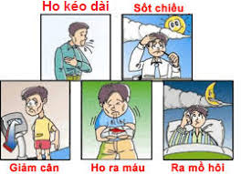
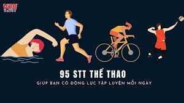

My name is Nguyễn Phạm Thanh Huân, and I am a student at Văn Lang University.
I would like to share a difficult experience I went through last year.
In August 2024, while studying and working in Saigon, I suddenly developed a cough.

When I returned to my hometown for Tet,my mother insisted that I see a doctor.
After a morning examination, I was admitted to the hospital that very afternoon.
I had to stay in the hospital for 20 days and continued outpatient treatment for the next 6 months.
I was diagnosed with pulmonary tuberculosis, a disease that many people often avoid due to stigma, much like COVID-19.

During the treatment, I had to postpone my studies and put my grades on hold.
This experience taught me the importance of living a healthy lifestyle, exercising regularly,
and maintaining good hygiene to boost the body's resistance against viruses.